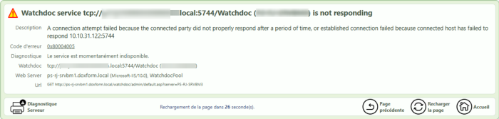

Mai 2025
Contexte
-
1er cas de figure
Alors que Watchdoc est déjà installé et fonctionne correctement dans une configuration en mode déporté (serveur Watchdoc et serveur web IIS installés sur deux serveurs différents), on constate qu'après la mise à jour en version 6.1.0.5221, les interfaces web (interface d'administration et page "Mon Compte") sont inacessibles.
-
2nd cas de figure
On vient d'installer Watchdoc v. 6.1.0.5221 dans une configuration en mode déporté (serveur Watchdoc et serveur web IIS installés sur deux serveurs différents) et lorsque l'on clique sur le raccourci installé sur le bureau du serveur, l'interface web est inacessible. Un message d'erreur s'affiche dans le navigateur.
Message d'erreur
Dans ces 2 cas de figure, à la place de l'interface d'administration et de la page "Mon compte", le message suivant s'affiche dans le navigateur :
"Watchdoc is not responding. A connection attempt failed because the connected party did not properly respond after a period of time, or established connection failed because connected host has failed to respond."
"Diagnostic : le service est momentanément indisponible" :

:
Cause
De nouvelles recommandations de sécurité sont en vigueur depuis la version Watchdoc 6.1.0.5122 : pour sécuriser les communications entre les serveurs, nous déconseillons l'installation de Watchdoc en mode "déporté", c'est-à-dire avec un serveur web IIS situé sur un autre serveur que le serveur d'impression Watchdoc (cf. Watchdoc standard - Présentation).
En conséquence, de nouvelles règles s'appliquent automatiquement lors de l'installation de Watchdoc (depuis la v 6.1.0.5122) pour sécuriser les communications. Sur le serveur Watchdoc :
-
les ports http 5754 et https 5753 sont ouverts aux accès distants ;
-
le port 5744 (utilisé pour les communications via le protocole .net Remoting) est fermé aux accès distants. Seules les communications qui proviennent du serveur "localhost" sont autorisées. Donc, les communications venant d'un serveur IIS déporté sont bloquées.
Résolution
Pour résoudre ce problème, il convient d'ajouter une règle dans le firewall du serveur Watchdoc. Cette règle doit permettre au serveur IIS déporté d'accéder à Watchdoc via le port TCP 5744 :
-
en tant qu'administrateur, accédez au serveur Watchdoc ;
-
dans la liste des règles "entrantes" (inbound rules), ajoutez la règle suivante :
-
port TCP 5744
-
adresse IP distante > cette adresse IP : saisissez l'adresse du site web déporté.
-
-
validez l'ajout de cette règle dans le firewall :
-
depuis le serveur, relancez un navigateur et vérifiez que les interfaces sont de nouveau accessibles.
N.B. : si Watchdoc est installé en domaine (configation master/slaves), réitérez cette modification sur tous les autres serveurs du domaine.
{kind=link}